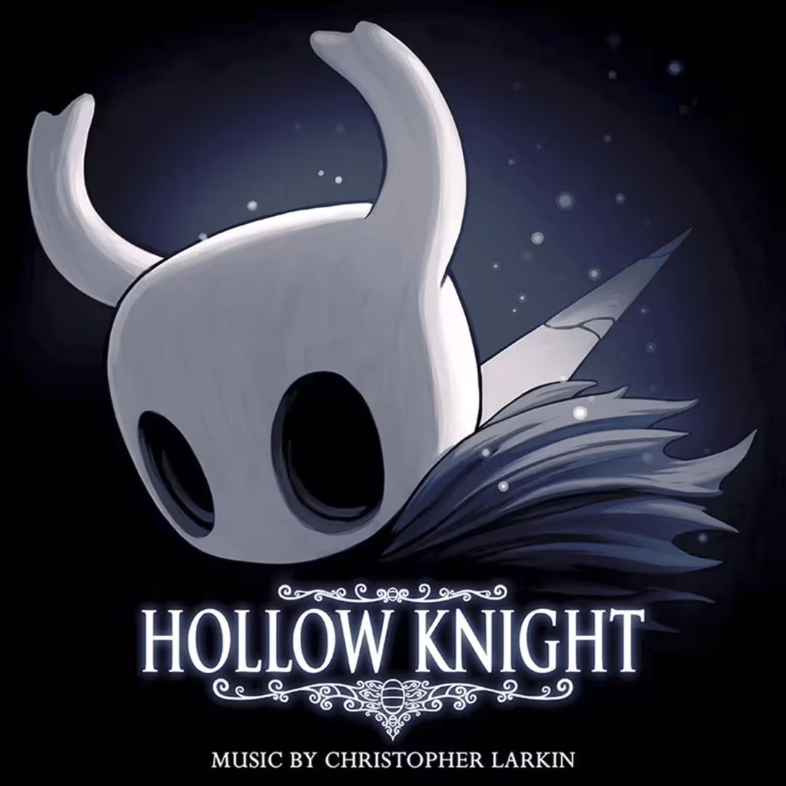

| 返回首页 | 《 空洞骑士》（Hollow Knight） 是独立团队 Team Cherry 开发的一款 2D 类银河恶魔城动作冒险游戏。在2017年2月24日发布了 Windows 版，2017年4月11日发布了 macOS 和 Linux 版，2018年6月12日发布了任天堂 Switch 版，2018年9月25日发布了 Xbox One和 PlayStation 4 版。 「在《空洞骑士》中打造属于自己的冒险之旅！穿越一个庞大却废弃的属于昆虫与英雄的王国，开启史诗般的冒险旅程。探索幽深的洞穴，与被感染的生物战斗，结识友好又奇异的昆虫，整个游戏都是经典的手绘 2D 风格。」 许多游戏评鉴家给与了这款游戏很高的评价。Tom Marks 发表在杂志《电脑玩家（PC Gamer）》的文章将这个游戏描述为他玩过最美丽的手工绘制游戏。媒体网站 Destructoid 的 Jed Whitaker 给与了这个游戏10/10分，表示它真的是游戏中的杰作，超越了大部分游戏，甚至肯定有摆在博物馆中的艺术价值。一些评论员也批评了游戏在某一部分方面缺乏创新与创意，比如媒体网站 Metro GameCentral，但也表示这款游戏也做得十分绮丽，设计得很巧妙，令人印象深刻地在近乎每一方面展现了类银河恶魔城的长处。 |
|  |